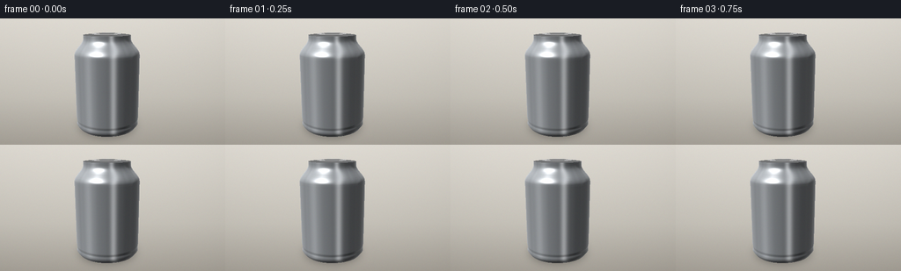
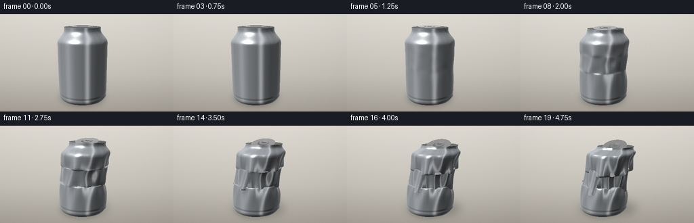
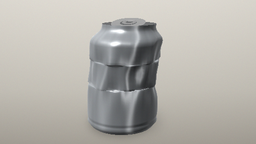
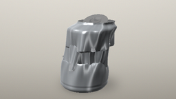

CODING AGENTS AS PIXEL WORLD MODELS
traex/Seed-2.1-Pro-0915 · phygen_019
点击播放 · 原生 RGB 像素
逐轮保存的候选
回放视频、检查图与代码变化。
每份候选均可单独播放。实际图片检查记录在下方工具轨迹中。
候选 01播放与检查图
点击播放 · 原生 RGB 像素


展开代码变化
--- 上一保存版本
+++ 本次保存版本
@@ -0,0 +1,410 @@
+"""Generate a 20-frame timelapse of a sealed aluminium can crushed by
+atmospheric pressure as air is pulled out. Pure numpy/PIL procedural
+rendering, no external engines. Frames are rasterized at 2x supersampling
+with a small z-buffer.
+"""
+import numpy as np
+from PIL import Image, ImageDraw, ImageFilter
+
+import artifact_io
+
+# ---------------------------------------------------------------- parameters
+W, H = 256, 144
+SS = 2 # supersampling factor
+SW, SH = W * SS, H * SS
+N = 20
+
+rng = np.random.default_rng(7)
+
+CAN_H = 1.0
+CAN_R = 0.34
+NA = 64 # columns around circumference
+NT = 46 # rows along height
+
+
+# ----------------------------------------------------------------- geometry
+def profile_r(t):
+ """Can side radius (soda-can profile) as function of height t in [0,1]."""
+ t = np.asarray(t)
+ r = np.empty_like(t)
+ m1 = t < 0.045
+ m2 = (~m1) & (t < 0.10)
+ m3 = (~m1) & (~m2) & (t < 0.80)
+ m4 = (~(m1 | m2 | m3)) & (t < 0.965)
+ m5 = ~(m1 | m2 | m3 | m4)
+ r[m1] = CAN_R * (0.90 + 0.10 * (t[m1] / 0.045))
+ u = (t[m2] - 0.045) / 0.055
+ r[m2] = CAN_R * (1.0 - 0.02 * np.sin(np.pi * u))
+ r[m3] = CAN_R
+ u = (t[m4] - 0.80) / 0.165
+ s = u * u * (3 - 2 * u)
+ r[m4] = CAN_R * (1.0 - 0.28 * s)
+ r[m5] = CAN_R * 0.72
+ return r
+
+
+def collapse_progress(frame):
+ s = np.clip((frame - 3.5) / 14.5, 0.0, 1.0)
+ return float(s ** 1.35)
+
+
+def angdiff(a, b):
+ return (a - b + np.pi) % (2 * np.pi) - np.pi
+
+
+def gauss(x, c, w):
+ return np.exp(-((x - c) / w) ** 2)
+
+
+def deform_side(theta, t, q):
+ """Deformed can-side point. Bottom (t=0) stays planted on the floor."""
+ r0 = profile_r(t)
+ x = r0 * np.cos(theta)
+ z = r0 * np.sin(theta)
+ y = t * CAN_H
+
+ # Vertical compression concentrated in two buckling bands near the dents.
+ band1 = gauss(t, 0.50, 0.055)
+ band2 = gauss(t, 0.72, 0.060)
+ y -= q * CAN_H * (0.20 * band1 + 0.16 * band2) * np.minimum(t / 0.5, 1.0) ** 0.5
+ y -= q * CAN_H * 0.10 * np.clip((t - 0.80) / 0.2, 0, 1)
+
+ # Localised inward dents (front is theta=0, camera looks along +z).
+ dents = (
+ -0.52 * gauss(angdiff(theta, 0.0), 0.0, 0.55) * gauss(t, 0.45, 0.13)
+ - 0.30 * gauss(angdiff(theta, 0.25), 0.0, 0.70) * gauss(t, 0.72, 0.10)
+ - 0.34 * gauss(angdiff(theta, -1.05), 0.0, 0.42) * gauss(t, 0.55, 0.12)
+ - 0.30 * gauss(angdiff(theta, 1.25), 0.0, 0.42) * gauss(t, 0.50, 0.12)
+ - 0.22 * gauss(angdiff(theta, 2.6), 0.0, 0.60) * gauss(t, 0.62, 0.15)
+ )
+ # Circumferential buckle folds around the dent bands.
+ folds = (
+ -0.13 * np.cos(7 * theta + 0.6) * gauss(t, 0.50, 0.045)
+ - 0.11 * np.cos(6 * theta - 1.1) * gauss(t, 0.72, 0.050)
+ )
+ crumple = 0.045 * np.sin(11 * theta + 9 * t) * gauss(t, 0.60, 0.30)
+ radial = q * CAN_R * (dents + folds + crumple)
+ x += radial * np.cos(theta)
+ z += radial * np.sin(theta)
+
+ # Whole upper body shears and tilts toward +x as it gives way.
+ lift = t ** 1.6
+ x += q * CAN_R * 0.50 * lift
+ z += q * CAN_R * 0.12 * lift * np.sin(t * 3.0)
+ return np.stack([x, y, z], axis=-1)
+
+
+def side_grid():
+ th = np.linspace(-np.pi, np.pi, NA, endpoint=False)
+ tv = np.linspace(0.0, 1.0, NT)
+ return np.meshgrid(th, tv, indexing="xy")
+
+
+TH, TT = side_grid()
+
+
+def build_can(q):
+ """Return positions, normals, colors and triangle index arrays."""
+ side = deform_side(TH, TT, q).reshape(NA * NT, 3)
+
+ # Normals from finite differences of the parametric deformed surface.
+ d_a = (deform_side(TH + 0.02, TT, q)
+ - deform_side(TH - 0.02, TT, q)).reshape(-1, 3)
+ d_t = (deform_side(TH, np.clip(TT + 0.01, 0, 1), q)
+ - deform_side(TH, np.clip(TT - 0.01, 0, 1), q)).reshape(-1, 3)
+ n = np.cross(d_t, d_a)
+ n /= np.linalg.norm(n, axis=1, keepdims=True) + 1e-9
+
+ base = np.array([176, 181, 186], dtype=float)
+ col = np.tile(base, (NA * NT, 1))
+ brushed = 1.0 + 0.028 * np.sin(TH.flatten() * 90.0) \
+ + 0.012 * np.sin(TH.flatten() * 37.0 + 1.7)
+ col *= brushed[:, None]
+
+ tris = []
+ for i in range(NT - 1):
+ a = i * NA + np.arange(NA)
+ b = (i + 1) * NA + np.arange(NA)
+ an = i * NA + (np.arange(NA) + 1) % NA
+ bn = (i + 1) * NA + (np.arange(NA) + 1) % NA
+ tris.append(np.stack([a, b, bn], axis=1))
+ tris.append(np.stack([a, bn, an], axis=1))
+ tris = np.concatenate(tris)
+
+ # ------------------------------------------------------------- top lid
+ tilt = 0.40 * q
+ yaw = -0.5 * q
+ cz, sz = np.cos(tilt), np.sin(tilt)
+ cy_, sy_ = np.cos(yaw), np.sin(yaw)
+ th = np.linspace(-np.pi, np.pi, NA, endpoint=False)
+ ring_world = deform_side(th, np.ones_like(th), q)
+ ring_center = ring_world.mean(axis=0)
+
+ NR = 4
+ lid_pos, lid_col = [], []
+ r_top = CAN_R * 0.72
+ for k in range(NR):
+ rho = k / (NR - 1)
+ dome0 = 0.018 * CAN_H * (1 - rho ** 2)
+ cave = -0.10 * CAN_H * q * (1 - rho ** 2)
+ for a in th:
+ lx = rho * r_top * np.cos(a)
+ lz = rho * r_top * np.sin(a)
+ x1 = cy_ * lx + sy_ * lz
+ z1 = -sy_ * lx + cy_ * lz
+ y1 = CAN_H + dome0 + cave
+ y2 = cz * (y1 - CAN_H) - sz * z1 + CAN_H
+ z2 = sz * (y1 - CAN_H) + cz * z1
+ lid_pos.append(ring_center + np.array([x1, y2 - CAN_H, z2]))
+ lid_col.append(np.array([188, 192, 196]) * (1.04 - 0.05 * rho))
+ lid_pos = np.array(lid_pos)
+ lid_pos[(NR - 1) * NA:] = ring_world # snap outer ring to side seam
+ lid_col = np.array(lid_col)
+
+ lid_tris = []
+ for k in range(NR - 1):
+ r0i = k * NA + np.arange(NA)
+ r1i = (k + 1) * NA + np.arange(NA)
+ r0n = k * NA + (np.arange(NA) + 1) % NA
+ r1n = (k + 1) * NA + (np.arange(NA) + 1) % NA
+ lid_tris.append(np.stack([r0i, r1i, r1n], axis=1))
+ lid_tris.append(np.stack([r0i, r1n, r0n], axis=1))
+ lid_tris = np.concatenate(lid_tris) + len(side)
+
+ lp = lid_pos.reshape(NR, NA, 3)
+ da = np.roll(lp, -1, axis=1) - np.roll(lp, 1, axis=1)
+ dr = np.zeros_like(lp)
+ dr[1:] = lp[1:] - lp[:-1]
+ dr[0] = lp[1] - lp[0]
+ ln = np.cross(dr.reshape(-1, 3), da.reshape(-1, 3))
+ ln /= np.linalg.norm(ln, axis=1, keepdims=True) + 1e-9
+
+ pos = np.concatenate([side, lid_pos])
+ norms = np.concatenate([n, ln])
+ colors = np.concatenate([col, lid_col])
+ all_tris = np.concatenate([tris, lid_tris])
+
+ # ------------------------------------------------------------- pull tab
+ def top_transform(local):
+ lx = local[..., 0]
+ ly = local[..., 1] - CAN_H
+ lz = local[..., 2]
+ x1 = cy_ * lx + sy_ * lz
+ z1 = -sy_ * lx + cy_ * lz
+ y2 = cz * ly - sz * z1
+ z2 = sz * ly + cz * z1
+ return ring_center + np.stack([x1, y2, z2], axis=-1)
+
+ tab_pos, tab_col, tab_tris = [], [], []
+ base_idx = len(pos)
+ for i, (ro, ri) in enumerate([(0.62, 0.30), (0.26, 0.13)]):
+ rings = []
+ for rr in (ro, ri):
+ ring = np.stack([
+ rr * r_top * np.cos(th),
+ np.full(NA, CAN_H + 0.014 * CAN_H),
+ 1.25 * rr * r_top * np.sin(th)
+ + (0.10 if i == 0 else 0.0) * r_top,
+ ], axis=1)
+ tab_pos.append(ring)
+ tab_col.append(np.full((NA, 3), 148 if i == 0 else 140))
+ rings.append(base_idx + (2 * i + (0 if len(rings) == 0 else 1)) * NA
+ + np.arange(NA))
+ (o_), (i_) = rings
+ on = o_[0] + (np.arange(NA) + 1) % NA
+ inn = i_[0] + (np.arange(NA) + 1) % NA
+ tab_tris.append(np.stack([o_, i_, inn], axis=1))
+ tab_tris.append(np.stack([o_, inn, on], axis=1))
+
+ # rivet disc
+ cx0, cz0 = 0.0, -0.18 * r_top
+ tab_pos.append(np.array([[cx0, CAN_H + 0.020 * CAN_H, cz0]]))
+ tab_pos.append(np.stack([
+ cx0 + 0.16 * r_top * np.cos(th),
+ np.full(NA, CAN_H + 0.018 * CAN_H),
+ cz0 + 0.16 * r_top * np.sin(th),
+ ], axis=1))
+ tab_col.append(np.full((1, 3), 158.0))
+ tab_col.append(np.full((NA, 3), 152.0))
+ cidx = base_idx + 4 * NA
+ ridx = cidx + 1 + np.arange(NA)
+ rnext = cidx + 1 + (np.arange(NA) + 1) % NA
+ tab_tris.append(np.stack([np.full(NA, cidx), ridx, rnext], axis=1))
+
+ tab_pos = top_transform(np.concatenate(tab_pos))
+ tab_col = np.concatenate(tab_col)
+ tab_tris = np.concatenate(tab_tris)
+ lx, ly, lz = 0.0, 1.0, 0.0
+ x1 = cy_ * lx + sy_ * lz
+ z1 = -sy_ * lx + cy_ * lz
+ nup = np.array([x1, cz * ly - sz * z1, sz * ly + cz * z1])
+ nup /= np.linalg.norm(nup)
+ tab_n = np.tile(nup, (len(tab_pos), 1))
+
+ pos = np.concatenate([pos, tab_pos])
+ norms = np.concatenate([norms, tab_n])
+ colors = np.concatenate([colors, tab_col])
+ all_tris = np.concatenate([all_tris, tab_tris])
+ return pos, norms, colors, all_tris, ring_world
+
+
+# ------------------------------------------------------------------ camera
+EYE = np.array([0.42, 1.18, 2.75])
+TARGET = np.array([0.06, 0.42, 0.0])
+UP = np.array([0.0, 1.0, 0.0])
+_fwd = TARGET - EYE
+_fwd /= np.linalg.norm(_fwd)
+_right = np.cross(_fwd, UP)
+_right /= np.linalg.norm(_right)
+_up = np.cross(_right, _fwd)
+FOCAL = SW * 1.18
+CX, CY = SW / 2, SH * 0.56
+
+L1 = np.array([-0.55, 0.95, 0.75]); L1 /= np.linalg.norm(L1)
+L2 = np.array([0.75, 0.35, -0.35]); L2 /= np.linalg.norm(L2)
+LR = np.array([0.15, 0.45, -1.0]); LR /= np.linalg.norm(LR)
+
+
+def project(p):
+ d = p - EYE
+ x = d @ _right
+ y = d @ _up
+ z = d @ _fwd
+ return CX + FOCAL * x / z, CY - FOCAL * y / z, z
+
+
+def rasterize(pos, norms, colors, tris):
+ sx, sy, sz = project(pos)
+ zbuf = np.full((SH, SW), np.inf)
+ img = np.zeros((SH, SW, 3))
+
+ for tri in tris:
+ i0, i1, i2 = int(tri[0]), int(tri[1]), int(tri[2])
+ z0, z1, z2 = sz[i0], sz[i1], sz[i2]
+ if min(z0, z1, z2) < 0.15:
+ continue
+ X = np.array([sx[i0], sx[i1], sx[i2]])
+ Y = np.array([sy[i0], sy[i1], sy[i2]])
+ xmin = max(int(np.floor(X.min())) - 1, 0)
+ xmax = min(int(np.ceil(X.max())) + 1, SW - 1)
+ ymin = max(int(np.floor(Y.min())) - 1, 0)
+ ymax = min(int(np.ceil(Y.max())) + 1, SH - 1)
+ if xmin > xmax or ymin > ymax:
+ continue
+ denom = (Y[1] - Y[2]) * (X[0] - X[2]) + (X[2] - X[1]) * (Y[0] - Y[2])
+ if abs(denom) < 1e-9:
+ continue
+ px, py = np.meshgrid(np.arange(xmin, xmax + 1),
+ np.arange(ymin, ymax + 1))
+ l0 = ((Y[1] - Y[2]) * (px - X[2]) + (X[2] - X[1]) * (py - Y[2])) / denom
+ l1 = ((Y[2] - Y[0]) * (px - X[2]) + (X[0] - X[2]) * (py - Y[2])) / denom
+ l2 = 1 - l0 - l1
+ inside = (l0 >= 0) & (l1 >= 0) & (l2 >= 0)
+ if not inside.any():
+ continue
+ z = l0 * z0 + l1 * z1 + l2 * z2
+ region = zbuf[ymin:ymax + 1, xmin:xmax + 1]
+ hit = inside & (z < region)
+ if not hit.any():
+ continue
+ xx, yy = px[hit], py[hit]
+ region[hit] = z[hit]
+ w0, w1, w2 = l0[hit], l1[hit], l2[hit]
+ nrm = w0[:, None] * norms[i0] + w1[:, None] * norms[i1] + w2[:, None] * norms[i2]
+ nrm /= np.linalg.norm(nrm, axis=1, keepdims=True) + 1e-9
+ base_c = w0[:, None] * colors[i0] + w1[:, None] * colors[i1] + w2[:, None] * colors[i2]
+ wp = w0[:, None] * pos[i0] + w1[:, None] * pos[i1] + w2[:, None] * pos[i2]
+ vdir = EYE[None] - wp
+ vdir /= np.linalg.norm(vdir, axis=1, keepdims=True)
+ nv_x = nrm @ _right
+ nv_f = nrm @ _fwd
+ ndv = (nrm * vdir).sum(1)
+
+ diff = (0.20
+ + 0.72 * np.clip(nrm @ L1, 0, 1)
+ + 0.20 * np.clip(nrm @ L2, 0, 1)
+ + 0.22 * np.clip(nrm @ LR, 0, 1))
+ hv = L1 + vdir
+ hv /= np.linalg.norm(hv, axis=1, keepdims=True)
+ spec = np.clip((nrm * hv).sum(1), 0, 1) ** 46
+ stripe = (0.65 * np.exp(-((nv_x - 0.20) / 0.10) ** 2)
+ + 0.32 * np.exp(-((nv_x + 0.52) / 0.15) ** 2)
+ + 0.18 * np.exp(-((nv_x - 0.72) / 0.07) ** 2))
+ fres = np.clip(1 - ndv, 0, 1) ** 3
+ facing = np.clip(-nv_f, 0, 1) ** 2
+ light = base_c * np.clip(diff, 0.12, 1.35)[:, None]
+ light += 255 * (0.85 * spec + 0.45 * stripe * facing + 0.30 * fres)[:, None]
+ img[yy, xx] = np.clip(light, 0, 255)
+ return img, zbuf
+
+
+# ---------------------------------------------------------------- background
+def make_background():
+ top = np.array([214, 210, 202.0])
+ mid = np.array([187, 183, 174.0])
+ bot = np.array([158, 153, 144.0])
+ grad = np.zeros((SH, SW, 3))
+ for y in range(SH):
+ f = y / SH
+ if f < 0.62:
+ u = f / 0.62
+ grad[y, :] = top * (1 - u) + mid * u
+ else:
+ u = (f - 0.62) / 0.38
+ grad[y, :] = mid * (1 - u) + bot * u
+ yy, xx = np.mgrid[0:SH, 0:SW]
+ r2 = ((xx - SW * 0.42) / (SW * 0.75)) ** 2 \
+ + ((yy - SH * 0.40) / (SH * 0.9)) ** 2
+ grad += np.clip(1 - r2, 0, 1)[..., None] * 10
+ return np.clip(grad, 0, 255)
+
+
+BG = make_background()
+
+
+def shadow_layer(q):
+ th = np.linspace(-np.pi, np.pi, NA, endpoint=False)
+ bottom = deform_side(th, np.zeros(NA), q)
+ sx, sy, _ = project(bottom)
+ pts = list(zip(sx.tolist(), sy.tolist()))
+ cx, cy = float(np.mean(sx)), float(np.mean(sy))
+
+ layer = Image.new("L", (SW, SH), 0)
+ ImageDraw.Draw(layer).polygon(pts, fill=120)
+ layer = layer.filter(ImageFilter.GaussianBlur(10))
+
+ soft = Image.new("L", (SW, SH), 0)
+ rx = SW * 0.105 * (1 + 0.55 * q)
+ ry = SH * 0.055 * (1 + 0.35 * q)
+ ox = q * SW * 0.03
+ ImageDraw.Draw(soft).ellipse(
+ [cx - rx + ox, cy - ry, cx + rx + ox, cy + ry],
+ fill=int(110 - 25 * q))
+ soft = soft.filter(ImageFilter.GaussianBlur(14))
+ combined = np.maximum(np.asarray(layer), np.asarray(soft))
+ return combined.astype(float) / 255.0 * 0.8
+
+
+def render_frame(frame):
+ q = collapse_progress(frame)
+ pos, norms, colors, tris, _ = build_can(q)
+ img_ss, zbuf = rasterize(pos, norms, colors, tris)
+ alpha = shadow_layer(q)[..., None]
+ frame_ss = BG.copy() * (1 - alpha)
+ hit = np.isfinite(zbuf)
+ frame_ss[hit] = img_ss[hit]
+ frame_ss += rng.normal(0, 1.4, frame_ss.shape)
+ out = Image.fromarray(np.clip(frame_ss, 0, 255).astype(np.uint8))
+ out = out.resize((W, H), Image.Resampling.LANCZOS)
+ return np.asarray(out)
+
+
+def main():
+ frames = np.stack([render_frame(f) for f in range(N)])
+ artifact_io.save(frames, ".")
+ print("saved", frames.shape,
+ "q:", [round(collapse_progress(f), 3) for f in range(N)])
+
+
+if __name__ == "__main__":
+ main()
候选 02播放与检查图
点击播放 · 原生 RGB 像素

展开代码变化
--- 上一保存版本
+++ 本次保存版本
@@ -18,8 +18,8 @@
CAN_H = 1.0
CAN_R = 0.34
-NA = 64 # columns around circumference
-NT = 46 # rows along height
+NA = 72 # columns around circumference
+NT = 64 # rows along height
# ----------------------------------------------------------------- geometry
@@ -63,34 +63,40 @@
z = r0 * np.sin(theta)
y = t * CAN_H
- # Vertical compression concentrated in two buckling bands near the dents.
- band1 = gauss(t, 0.50, 0.055)
- band2 = gauss(t, 0.72, 0.060)
- y -= q * CAN_H * (0.20 * band1 + 0.16 * band2) * np.minimum(t / 0.5, 1.0) ** 0.5
- y -= q * CAN_H * 0.10 * np.clip((t - 0.80) / 0.2, 0, 1)
+ # Vertical compression concentrated in two broad buckling bands.
+ band1 = gauss(t, 0.50, 0.080)
+ band2 = gauss(t, 0.72, 0.085)
+ y -= q * CAN_H * (0.13 * band1 + 0.11 * band2) \
+ * np.minimum(t / 0.5, 1.0) ** 0.5
+ y -= q * CAN_H * 0.07 * np.clip((t - 0.80) / 0.2, 0, 1)
# Localised inward dents (front is theta=0, camera looks along +z).
dents = (
- -0.52 * gauss(angdiff(theta, 0.0), 0.0, 0.55) * gauss(t, 0.45, 0.13)
- - 0.30 * gauss(angdiff(theta, 0.25), 0.0, 0.70) * gauss(t, 0.72, 0.10)
- - 0.34 * gauss(angdiff(theta, -1.05), 0.0, 0.42) * gauss(t, 0.55, 0.12)
- - 0.30 * gauss(angdiff(theta, 1.25), 0.0, 0.42) * gauss(t, 0.50, 0.12)
- - 0.22 * gauss(angdiff(theta, 2.6), 0.0, 0.60) * gauss(t, 0.62, 0.15)
+ -0.38 * gauss(angdiff(theta, 0.0), 0.0, 0.62) * gauss(t, 0.46, 0.16)
+ - 0.22 * gauss(angdiff(theta, 0.25), 0.0, 0.78) * gauss(t, 0.72, 0.13)
+ - 0.25 * gauss(angdiff(theta, -1.05), 0.0, 0.50) * gauss(t, 0.55, 0.15)
+ - 0.22 * gauss(angdiff(theta, 1.25), 0.0, 0.50) * gauss(t, 0.50, 0.15)
+ - 0.16 * gauss(angdiff(theta, 2.6), 0.0, 0.66) * gauss(t, 0.62, 0.18)
)
# Circumferential buckle folds around the dent bands.
folds = (
- -0.13 * np.cos(7 * theta + 0.6) * gauss(t, 0.50, 0.045)
- - 0.11 * np.cos(6 * theta - 1.1) * gauss(t, 0.72, 0.050)
+ -0.08 * np.cos(7 * theta + 0.6) * gauss(t, 0.50, 0.070)
+ - 0.07 * np.cos(6 * theta - 1.1) * gauss(t, 0.72, 0.075)
)
- crumple = 0.045 * np.sin(11 * theta + 9 * t) * gauss(t, 0.60, 0.30)
+ crumple = 0.030 * np.sin(11 * theta + 9 * t) * gauss(t, 0.60, 0.32)
radial = q * CAN_R * (dents + folds + crumple)
+ # Gentle global contraction as the internal pressure drops.
+ radial -= q * CAN_R * 0.05
+ # The thin wall can fold but must not pass through itself.
+ floor = 0.10 * CAN_R - r0
+ radial = np.maximum(radial, floor)
x += radial * np.cos(theta)
z += radial * np.sin(theta)
# Whole upper body shears and tilts toward +x as it gives way.
lift = t ** 1.6
- x += q * CAN_R * 0.50 * lift
- z += q * CAN_R * 0.12 * lift * np.sin(t * 3.0)
+ x += q * CAN_R * 0.30 * lift
+ z += q * CAN_R * 0.08 * lift * np.sin(t * 3.0)
return np.stack([x, y, z], axis=-1)
@@ -132,8 +138,8 @@
tris = np.concatenate(tris)
# ------------------------------------------------------------- top lid
- tilt = 0.40 * q
- yaw = -0.5 * q
+ tilt = 0.28 * q
+ yaw = -0.30 * q
cz, sz = np.cos(tilt), np.sin(tilt)
cy_, sy_ = np.cos(yaw), np.sin(yaw)
th = np.linspace(-np.pi, np.pi, NA, endpoint=False)
@@ -146,7 +152,7 @@
for k in range(NR):
rho = k / (NR - 1)
dome0 = 0.018 * CAN_H * (1 - rho ** 2)
- cave = -0.10 * CAN_H * q * (1 - rho ** 2)
+ cave = -0.07 * CAN_H * q * (1 - rho ** 2)
for a in th:
lx = rho * r_top * np.cos(a)
lz = rho * r_top * np.sin(a)
候选 03播放与检查图
可观测工具轨迹
实际执行的命令与返回图片。
命令 1exit 0
/bin/bash -lc 'ls -la; cat prompt.txt; cat GENERATION_RULES.md; cat task_spec.json'
命令 2exit 0
/bin/bash -lc 'cat artifact_io.py'
命令 3exit 0
/bin/bash -lc 'cd . && time python generate.py'
命令 4exit 0
/bin/bash -lc 'cd . && python generate.py'
视觉工具实际返回图片 1

视觉工具实际返回图片 2

视觉工具实际返回图片 3

视觉工具实际返回图片 4

保存候选 3 份；完成命令 4 次；可验证图片返回 4 张。原始 API 响应与完整日志保留在本地。